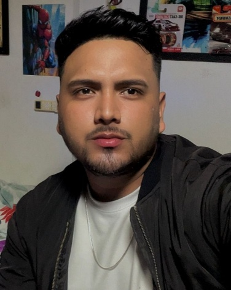
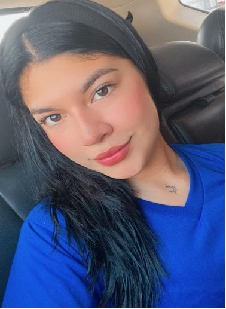
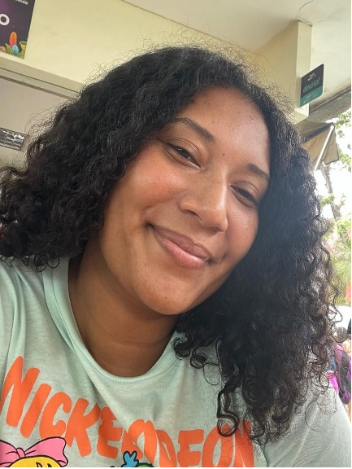
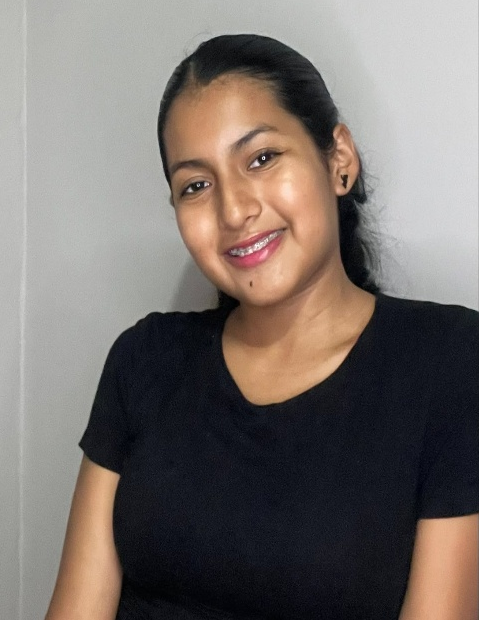

Proyecto Académico: Micrófono Abierto: El Rostro del Nuevo Periodismo
Presentación profesional de los integrantes, roles, habilidades y proyección laboral.
"Micrófono Abierto: El Rostro del Nuevo Periodismo" es una iniciativa académica enfocada en el desarrollo de competencias relacionadas con el periodismo digital, la producción de contenidos multimedia y la comunicación estratégica.
Cada integrante asumió un rol específico para fortalecer el trabajo colaborativo y la creación de productos digitales.

Estudiante de Comunicación con interés en el periodismo digital y la producción de contenidos.
Comunicación estratégica y gestión de contenidos digitales.
En "Micrófono Abierto: El Rostro del Nuevo Periodismo" desempeñé el rol de director de Contenidos. Mi función fue coordinar las actividades del grupo, supervisar el desarrollo de los productos y asegurar que la información presentada cumpliera con los objetivos del proyecto.

Interesada en el periodismo multimedia y la creación de contenidos digitales.
Especialización en periodismo digital y producción audiovisual.
Mi función fue actuar como Reportero Digital, participando en la elaboración de videos y en la presentación de información relacionada con el proyecto. Esta experiencia fortaleció mis habilidades comunicativas y mi confianza frente a la cámara.

Interesada en investigación, análisis crítico y verificación de datos.
Investigación y comunicación institucional.
Dentro de "Micrófono Abierto" me desempeñé como Investigadora Periodística. Mi labor consistió en recopilar información, verificar fuentes y apoyar la elaboración de los contenidos utilizados en los diferentes productos digitales. Esta experiencia me permitió desarrollar habilidades de investigación y análisis crítico, fundamentales para el periodismo digital.

Apasionada por el diseño digital, la creatividad y las redes sociales.
Producción multimedia y marketing digital.
Mi función fue diseñar las publicaciones para redes sociales y colaborar en la edición de materiales audiovisuales. Además, apoyé la difusión del proyecto mediante estrategias de comunicación digital.